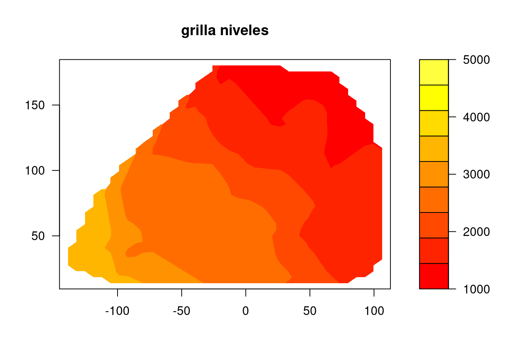
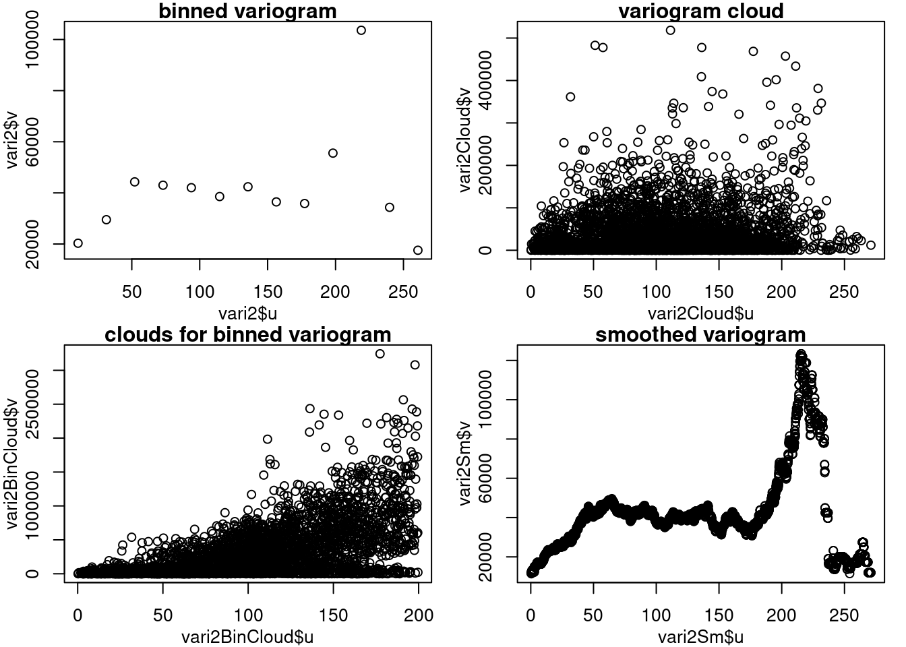

Chapter 4 Modelos de regresión espacial
4.1 Estudio de Mercadeo
Se comparan varios tipos de modelos de regresión espacial para ver con cual se obtiene el mejor ajuste. Se consideran modelos autoregresivos y de medias móvviles así como su combinación.
4.2 Paquetes
rm(list=ls())
library(openxlsx)
library(dplyr)
library(rgdal)
library(maptools)
library(GISTools)
library(spdep)
library(readr)
library(car)
library(readxl)
library(psych)
library(rgdal)
library(FactoClass)
library(spdep)
require("GWmodel")
library("mapsRinteractive")
options(scipen = 999)4.3 Lectura de Datos
# Lectura de Datos
BASE <- read_excel("data_3_EstudioDeMercadoEspacial/BASE.xlsx")
# Lectura del Shape de Colombia por Departamentos
Colombia = readOGR(dsn = "data_3_EstudioDeMercadoEspacial/Geodatabase Colombia",
layer = "departamentos")## OGR data source with driver: ESRI Shapefile
## Source: "/home/jncc/Documents/Monitorias/EspacialPage/Clases-EE-UN/data_3_EstudioDeMercadoEspacial/Geodatabase Colombia", layer: "departamentos"
## with 33 features
## It has 6 fields
## Integer64 fields read as strings: AñO_CREAC4.3.1 Cruce de información y arreglo de coordenadas
#Cruce de información con el shape cargado
Insumo = merge(Colombia, BASE, by.x="COD_DANE", by.y="Cod")
Insumo = subset(Insumo[c(1:31,33),])
# Conversión a Coordenadas UTM
Crs.geo = CRS("+proj=tmerc +lat_0=4.599047222222222 +lon_0=-74.08091666666667 +k=1 +x_0=1000000 +y_0=1000000 +ellps=intl +towgs84=307,304,-318,0,0,0,0 +units=m +no_defs")
proj4string(Insumo) <- Crs.geo
Insumo.utm = spTransform(Insumo, CRS("+init=epsg:3724 +units=km"))4.4 Matriz de vecindades
#---
# MATRIZ DE VECINDADES (W)
#---
## Centroides de las Áreas
Centros = getSpPPolygonsLabptSlots(Insumo.utm)
Centroids <- SpatialPointsDataFrame(coords = Centros,
data=Insumo.utm@data,
proj4string=CRS("+init=epsg:3724 +units=km"))
# Matriz de Distancias entre los Centriodes
Wdist = dist(Centros, up=T)
# Matriz W de vecindades
library(pgirmess)##
## Attaching package: 'pgirmess'## The following object is masked from 'package:psych':
##
## shannonlibrary(HistogramTools)
library(strucchange)##
## Attaching package: 'strucchange'## The following object is masked from 'package:stringr':
##
## boundarylibrary(spdep)
Insumo.nb = poly2nb(Insumo.utm, queen=T)
#n <- max(sapply(Insumo.nb, length))
#ll <- lapply(Insumo.nb, function(X) {
# c(as.numeric(X), rep(0, times = n - length(X)))
#})
#out <- do.call(cbind, ll)
#Departamentos<-Insumo$Departamento
#MatW<-matrix(NA,32,32)
#for (i in 1:8) {
# for (j in 1:32) {
# if (out[i,j]!=0) {
# MatW[out[i,j],j]<-1
# } else{MatW[out[i,j],j]<-0}
# }
#}
#for (i in 1:32) {
# for (j in 1:32) {
# if (is.na(MatW[i,j])) {
# MatW[i,j]<-0
# }
# }
#}
#colnames(MatW)<-Departamentos
#rownames(MatW)<-Departamentos
#MatW1<-MatW[,1:16]
#MatW2<-MatW[,17:32]
# Martiz W (Estilos)
Insumo.lw = nb2listw(Insumo.nb)
Insumo.lwb = nb2listw(Insumo.nb, style="B")
Insumo.lwc = nb2listw(Insumo.nb, style="C")
Insumo.lwu = nb2listw(Insumo.nb, style="U")
Insumo.lww = nb2listw(Insumo.nb, style="W")4.5 Mapa de valores observados
# Mapa de Valores Observados
#dev.new() #windows()
choropleth(Insumo, Insumo$CAP_BAC)
shad = auto.shading(Insumo$CAP_BAC,
n=5,
cols=(brewer.pal(5,"Reds")),
cutter = quantileCuts)
choro.legend(1555874,535165.5,
shad,
fmt="%1.1f",
title = "Valores Locales",
cex=0.7,
under = "Menos de",
between = "a",
over = "Mas de")
title("Valores Observados para las captaciones del banco agrario
en Colombia, cuarto trimestre 2020", cex.main=1)
map.scale(755874,335165.5, 250000, "km", 2, 50, sfcol='brown')
4.6 Pruebas de Autocorrelación
#----------------------------
# PRUEBAS DE AUTOCORRELACION
#----------------------------
# Moran
moran.test(Insumo$CAP_BAC, Insumo.lw)##
## Moran I test under randomisation
##
## data: Insumo$CAP_BAC
## weights: Insumo.lw
##
## Moran I statistic standard deviate = 2.0024, p-value = 0.02262
## alternative hypothesis: greater
## sample estimates:
## Moran I statistic Expectation Variance
## 0.153081266 -0.032258065 0.008566935# Dispersograma de Moran
#dev.new() #windows()
moran.plot(Insumo$CAP_BAC,
Insumo.lw,
labels=as.character(Insumo$Departamento),
xlab="Captaciones BAC",
ylab="Captaciones BAC rezagado",
las=1,
pch=16,
cex=0.5)
legend("bottomright",
legend=c("I de Moran: 0.1530", "Valor P: 0.02262"),
cex=1,
bg='lightgreen')
title("Dispersograma de Moran para las captaciones del banco agrario en
los Departamentos de Colombia, cuarto trimestre 2020", cex.main=1)
# Local G
nearng = dnearneigh(coordinates(Insumo.utm), 0, 550)
Insumo.lw.g = nb2listw(nearng, style="B")
localG = localG(Insumo$CAP_BAC, Insumo.lw.g); localG## [1] 1.66525050 0.02608278 1.33032949 1.15892050 1.85852161 0.68445519 1.49486468 0.10163662 1.64717068
## [10] 1.32714028 2.53361281 2.21899396 -0.71311540 0.50952811 1.48899277 0.81676480 0.98434717 2.09087184
## [19] 2.08725553 1.05493906 1.32486118 2.09147517 2.16305539 1.89323276 1.52155929 0.84992902 -1.19798594
## [28] -1.33847805 0.29701426 -1.60300117 1.67015910 1.96543367
## attr(,"cluster")
## [1] High Low Low High Low Low High Low Low High Low High Low Low Low High High Low Low High Low High
## [23] High Low Low Low Low Low Low Low Low High
## Levels: Low High
## attr(,"gstari")
## [1] FALSE
## attr(,"call")
## localG(x = Insumo$CAP_BAC, listw = Insumo.lw.g)
## attr(,"class")
## [1] "localG"# Simulaci?n montecarlo
sim.G = matrix(0,1000,32)
for(i in 1:1000) sim.G[i,] = localG(sample(Insumo$CAP_BAC),Insumo.lw.g)
mc.pvalor.G = (colSums(sweep(sim.G,2,localG,">="))+1)/(nrow(sim.G)+1)
mc.pvalor.G## [1] 0.016983017 0.434565435 0.081918082 0.109890110 0.000999001 0.275724276 0.071928072 0.467532468 0.034965035
## [10] 0.048951049 0.000999001 0.002997003 0.728271728 0.302697303 0.034965035 0.231768232 0.166833167 0.002997003
## [19] 0.000999001 0.135864136 0.092907093 0.001998002 0.004995005 0.013986014 0.052947053 0.230769231 0.958041958
## [28] 0.967032967 0.437562438 0.995004995 0.051948052 0.0009990014.7 Mapas
# Mapas
par(mfrow=c(1,2), mar=c(1,1,8,1)/2)
shadeg = auto.shading(localG,
n=5,
cols=(brewer.pal(5,"Purples")),
cutter=quantileCuts)
#dev.new() #windows()
choropleth(Insumo,
localG,
shading=shadeg)
choro.legend(1555874,
535165.5,
shadeg,
fmt="%1.2f",
title = "G",
cex=0.7,
under = "Menos de",
between = "a",
over = "Mas de")
title("G Getis Ord Local para las captaciones del banco agrario
en Colombia, cuarto trimestre 2020", cex.main=1)
map.scale(755874,335165.5, 250000, "km", 2, 50, sfcol='brown')
# Mapa de P-values
#dev.new() #windows()
shadegp = shading(c(0.01,0.05,0.1), cols = (brewer.pal(4,"Spectral")))
choropleth(Insumo, mc.pvalor.G, shading=shadegp)
choro.legend(1555874,
535165.5,
shadegp,
fmt="%1.2f",
title = "P-valor de G",
cex=0.7,
under = "Menos de",
between = "a",
over = "Mas de")
title("P- Valor de G Getis Ord Local para las captaciones del banco agrario
en Colombia, cuarto trimestre 2020", cex.main=1)
map.scale(755874,335165.5, 250000, "km", 2, 50, sfcol='brown')##Modelos SDEM, SDM, Manski, SARAR
####Modelos SDEM, SDM, Manski, SARAR########
#reg.eq1=CAP_BAC ~ PIB + NBI + CAP_BOG + CAP_BC + CAP_OCC + CAP_CS + Población + IPM
reg.eq1=CAP_BAC ~ PIB + NBI + CAP_BOG+CAP_BC + CAP_OCC + CAP_CS+ Población
reg1=lm(reg.eq1,data=Insumo) #OLS y=XB+e,
reg2=lmSLX(reg.eq1,data=Insumo, Insumo.lw) #SLX y=XB+WxT+e
reg3=lagsarlm(reg.eq1,data= Insumo, Insumo.lw) #Lag Y y=XB+WxT+u, u=LWu+e
reg4=errorsarlm(reg.eq1,data=Insumo, Insumo.lw) #Spatial Error y=pWy+XB+e
reg5=errorsarlm(reg.eq1, data=Insumo, Insumo.lw, etype="emixed") #SDEM Spatial Durbin Error Model y=XB+WxT+u, u=LWu+e
reg6=lagsarlm(reg.eq1, data=Insumo,Insumo.lw, type="mixed") #SDM Spatial Durbin Model (add lag X to SAR) y=pWy+XB+WXT+e
reg7=sacsarlm(reg.eq1,data=Insumo, Insumo.lw, type="sacmixed") #Manski Model: y=pWy+XB+WXT+u, u=LWu+e (no recomendado)
reg8=sacsarlm(reg.eq1,data=Insumo,Insumo.lw, type="sac") #SARAR o Kelejian-Prucha, Cliff-Ord, o SAC If all T=0,y=pWy+XB+u, u=LWu+e4.8 Resumen de modelos
#Resumen de modelos
s=summary
s(reg1)#OLS##
## Call:
## lm(formula = reg.eq1, data = Insumo)
##
## Residuals:
## Min 1Q Median 3Q Max
## -276.51 -65.60 -7.76 46.60 396.20
##
## Coefficients:
## Estimate Std. Error t value Pr(>|t|)
## (Intercept) 148.21380364 79.80068638 1.857 0.0756 .
## PIB 0.00389642 0.00328986 1.184 0.2479
## NBI -1.28539812 1.73982368 -0.739 0.4672
## CAP_BOG -0.06643826 0.05411306 -1.228 0.2314
## CAP_BC 0.00397406 0.00607852 0.654 0.5195
## CAP_OCC -0.04340185 0.02170799 -1.999 0.0570 .
## CAP_CS 0.47283237 0.31370238 1.507 0.1448
## Población 0.00000137 0.00006700 0.020 0.9839
## ---
## Signif. codes: 0 '***' 0.001 '**' 0.01 '*' 0.05 '.' 0.1 ' ' 1
##
## Residual standard error: 141.6 on 24 degrees of freedom
## Multiple R-squared: 0.8807, Adjusted R-squared: 0.8459
## F-statistic: 25.31 on 7 and 24 DF, p-value: 0.000000001309s(reg2)#SLX##
## Call:
## lm(formula = formula(paste("y ~ ", paste(colnames(x)[-1], collapse = "+"))),
## data = as.data.frame(x), weights = weights)
##
## Residuals:
## Min 1Q Median 3Q Max
## -201.00 -74.99 -0.51 34.55 342.00
##
## Coefficients:
## Estimate Std. Error t value Pr(>|t|)
## (Intercept) 392.97159157 284.42668099 1.382 0.185
## PIB 0.00429319 0.00383973 1.118 0.279
## NBI -0.57603773 2.48213535 -0.232 0.819
## CAP_BOG -0.00703635 0.07700761 -0.091 0.928
## CAP_BC -0.00075536 0.01003615 -0.075 0.941
## CAP_OCC -0.05372016 0.03418522 -1.571 0.135
## CAP_CS 0.12199794 0.43670734 0.279 0.783
## Población 0.00004753 0.00012149 0.391 0.701
## lag.PIB 0.00317318 0.00943185 0.336 0.741
## lag.NBI -6.81433196 5.99552430 -1.137 0.271
## lag.CAP_BOG -0.06868663 0.18842513 -0.365 0.720
## lag.CAP_BC 0.00684589 0.01472675 0.465 0.648
## lag.CAP_OCC -0.00984285 0.05447122 -0.181 0.859
## lag.CAP_CS 0.33585267 1.09533771 0.307 0.763
## lag.Población -0.00016927 0.00017459 -0.970 0.346
##
## Residual standard error: 151.6 on 17 degrees of freedom
## Multiple R-squared: 0.9031, Adjusted R-squared: 0.8234
## F-statistic: 11.32 on 14 and 17 DF, p-value: 0.000005467s(reg3)#Lag Y##
## Call:lagsarlm(formula = reg.eq1, data = Insumo, listw = Insumo.lw)
##
## Residuals:
## Min 1Q Median 3Q Max
## -213.859 -60.238 -17.811 42.960 393.389
##
## Type: lag
## Coefficients: (numerical Hessian approximate standard errors)
## Estimate Std. Error z value Pr(>|z|)
## (Intercept) 77.75431414819 80.79616201670 0.9624 0.33587
## PIB 0.00330780477 0.00254966082 1.2974 0.19451
## NBI -0.77863467134 1.49479379488 -0.5209 0.60244
## CAP_BOG -0.05466121768 0.04510317006 -1.2119 0.22554
## CAP_BC 0.00533211210 0.00501910191 1.0624 0.28807
## CAP_OCC -0.03421667698 0.01868849261 -1.8309 0.06712
## CAP_CS 0.40699816254 0.26348656211 1.5447 0.12243
## Población 0.00000091508 0.00004281372 0.0214 0.98295
##
## Rho: 0.22884, LR test value: 2.096, p-value: 0.14768
## Approximate (numerical Hessian) standard error: 0.15357
## z-value: 1.4901, p-value: 0.13619
## Wald statistic: 2.2204, p-value: 0.13619
##
## Log likelihood: -198.251 for lag model
## ML residual variance (sigma squared): 13916, (sigma: 117.97)
## Number of observations: 32
## Number of parameters estimated: 10
## AIC: 416.5, (AIC for lm: 416.6)s(reg4)#Lag Error (SEM)##
## Call:errorsarlm(formula = reg.eq1, data = Insumo, listw = Insumo.lw)
##
## Residuals:
## Min 1Q Median 3Q Max
## -215.7428 -56.4299 -2.2091 46.6630 425.7867
##
## Type: error
## Coefficients: (asymptotic standard errors)
## Estimate Std. Error z value Pr(>|z|)
## (Intercept) 94.500062171 73.097740078 1.2928 0.19608
## PIB 0.003656790 0.002619923 1.3958 0.16279
## NBI -0.334674295 1.408551013 -0.2376 0.81219
## CAP_BOG -0.032484041 0.049990129 -0.6498 0.51582
## CAP_BC 0.001202332 0.005555428 0.2164 0.82866
## CAP_OCC -0.048739699 0.019538015 -2.4946 0.01261
## CAP_CS 0.285572474 0.287233645 0.9942 0.32012
## Población 0.000040164 0.000066648 0.6026 0.54676
##
## Lambda: 0.50692, LR test value: 3.8031, p-value: 0.051158
## Approximate (numerical Hessian) standard error: 0.21454
## z-value: 2.3629, p-value: 0.018135
## Wald statistic: 5.5831, p-value: 0.018135
##
## Log likelihood: -197.3975 for error model
## ML residual variance (sigma squared): 12495, (sigma: 111.78)
## Number of observations: 32
## Number of parameters estimated: 10
## AIC: 414.79, (AIC for lm: 416.6)s(reg5)#Durbin Error (SDEM)##
## Call:errorsarlm(formula = reg.eq1, data = Insumo, listw = Insumo.lw, etype = "emixed")
##
## Residuals:
## Min 1Q Median 3Q Max
## -199.7723 -69.8844 -2.0075 37.9235 362.9104
##
## Type: error
## Coefficients: (asymptotic standard errors)
## Estimate Std. Error z value Pr(>|z|)
## (Intercept) 248.934586826 220.997176296 1.1264 0.25999
## PIB 0.004499050 0.002763860 1.6278 0.10356
## NBI -0.058411226 1.767448337 -0.0330 0.97364
## CAP_BOG -0.026724632 0.054644416 -0.4891 0.62480
## CAP_BC -0.000183348 0.007104435 -0.0258 0.97941
## CAP_OCC -0.051006013 0.024157938 -2.1114 0.03474
## CAP_CS 0.227498753 0.309055950 0.7361 0.46166
## Población 0.000035177 0.000084525 0.4162 0.67729
## lag.PIB 0.003069904 0.007273446 0.4221 0.67297
## lag.NBI -4.397302667 4.370216203 -1.0062 0.31432
## lag.CAP_BOG -0.078935302 0.133353634 -0.5919 0.55390
## lag.CAP_BC 0.000970534 0.011031858 0.0880 0.92990
## lag.CAP_OCC -0.013417106 0.040319109 -0.3328 0.73931
## lag.CAP_CS 0.374124922 0.777502436 0.4812 0.63038
## lag.Población -0.000103911 0.000125213 -0.8299 0.40661
##
## Lambda: 0.28217, LR test value: 0.34013, p-value: 0.55976
## Approximate (numerical Hessian) standard error: 0.43688
## z-value: 0.64589, p-value: 0.51835
## Wald statistic: 0.41717, p-value: 0.51835
##
## Log likelihood: -195.7931 for error model
## ML residual variance (sigma squared): 11856, (sigma: 108.89)
## Number of observations: 32
## Number of parameters estimated: 17
## AIC: 425.59, (AIC for lm: 423.93)s(reg6)#Durbin (SDM)##
## Call:lagsarlm(formula = reg.eq1, data = Insumo, listw = Insumo.lw, type = "mixed")
##
## Residuals:
## Min 1Q Median 3Q Max
## -185.6170 -74.5630 -1.2308 34.6848 363.6597
##
## Type: mixed
## Coefficients: (numerical Hessian approximate standard errors)
## Estimate Std. Error z value Pr(>|z|)
## (Intercept) 259.002902069 55.621142504 4.6566 0.000003215
## PIB 0.004292096 0.002531326 1.6956 0.08996
## NBI -0.068020300 NaN NaN NaN
## CAP_BOG -0.013498834 0.057267316 -0.2357 0.81365
## CAP_BC -0.000674466 0.007073100 -0.0954 0.92403
## CAP_OCC -0.052995708 0.024225842 -2.1876 0.02870
## CAP_CS 0.159111966 0.330144713 0.4819 0.62984
## Población 0.000046528 0.000093081 0.4999 0.61717
## lag.PIB 0.001006279 0.005492940 0.1832 0.85464
## lag.NBI -5.022145973 4.547493579 -1.1044 0.26943
## lag.CAP_BOG -0.060141056 0.061322296 -0.9807 0.32672
## lag.CAP_BC 0.003372687 0.010237335 0.3294 0.74182
## lag.CAP_OCC 0.001941496 0.042927437 0.0452 0.96393
## lag.CAP_CS 0.265435964 0.307708639 0.8626 0.38835
## lag.Población -0.000120261 0.000095918 -1.2538 0.20992
##
## Rho: 0.28321, LR test value: 0.99104, p-value: 0.31949
## Approximate (numerical Hessian) standard error: 0.25885
## z-value: 1.0941, p-value: 0.27392
## Wald statistic: 1.197, p-value: 0.27392
##
## Log likelihood: -195.4676 for mixed model
## ML residual variance (sigma squared): 11616, (sigma: 107.78)
## Number of observations: 32
## Number of parameters estimated: 17
## AIC: 424.94, (AIC for lm: 423.93)s(reg7)#Manski##
## Call:sacsarlm(formula = reg.eq1, data = Insumo, listw = Insumo.lw, type = "sacmixed")
##
## Residuals:
## Min 1Q Median 3Q Max
## -179.6048 -72.7882 -2.7818 33.8501 346.2488
##
## Type: sacmixed
## Coefficients: (numerical Hessian approximate standard errors)
## Estimate Std. Error z value Pr(>|z|)
## (Intercept) 307.899506935 245.174840544 1.2558 0.20918
## PIB 0.004070842 0.002818181 1.4445 0.14860
## NBI -0.195254122 1.741252781 -0.1121 0.91072
## CAP_BOG 0.002531849 0.035792716 0.0707 0.94361
## CAP_BC -0.001838769 0.006389043 -0.2878 0.77350
## CAP_OCC -0.056119738 0.023484361 -2.3897 0.01686
## CAP_CS 0.071595240 0.203731481 0.3514 0.72527
## Población 0.000065749 0.000085924 0.7652 0.44415
## lag.PIB 0.000817609 0.006451837 0.1267 0.89916
## lag.NBI -6.096432537 5.166092289 -1.1801 0.23797
## lag.CAP_BOG -0.052377434 0.133052991 -0.3937 0.69383
## lag.CAP_BC 0.006801659 0.011453433 0.5939 0.55261
## lag.CAP_OCC 0.008763486 0.040120481 0.2184 0.82709
## lag.CAP_CS 0.219189292 0.775091430 0.2828 0.77734
## lag.Población -0.000162608 0.000147069 -1.1057 0.26888
##
## Rho: 0.38485
## Approximate (numerical Hessian) standard error: 0.34303
## z-value: 1.1219, p-value: 0.2619
## Lambda: -0.26343
## Approximate (numerical Hessian) standard error: 0.62199
## z-value: -0.42353, p-value: 0.67191
##
## LR test value: 7.7816, p-value: 0.5563
##
## Log likelihood: -195.4082 for sacmixed model
## ML residual variance (sigma squared): 11213, (sigma: 105.89)
## Number of observations: 32
## Number of parameters estimated: 18
## AIC: 426.82, (AIC for lm: 416.6)s(reg8)#SARAR lag Y and lag e (SAC)##
## Call:sacsarlm(formula = reg.eq1, data = Insumo, listw = Insumo.lw, type = "sac")
##
## Residuals:
## Min 1Q Median 3Q Max
## -203.1991 -58.2427 -4.1109 46.5336 421.1733
##
## Type: sac
## Coefficients: (numerical Hessian approximate standard errors)
## Estimate Std. Error z value Pr(>|z|)
## (Intercept) 73.149386026 83.556706428 0.8754 0.38133
## PIB 0.003487952 0.002661736 1.3104 0.19006
## NBI -0.337466937 1.455155630 -0.2319 0.81661
## CAP_BOG -0.038888663 0.051338733 -0.7575 0.44876
## CAP_BC 0.002799262 0.006119689 0.4574 0.64737
## CAP_OCC -0.043084476 0.021693387 -1.9861 0.04703
## CAP_CS 0.320438586 0.294474987 1.0882 0.27652
## Población 0.000028476 0.000068136 0.4179 0.67599
##
## Rho: 0.1104
## Approximate (numerical Hessian) standard error: 0.19087
## z-value: 0.57842, p-value: 0.56298
## Lambda: 0.41973
## Approximate (numerical Hessian) standard error: 0.27323
## z-value: 1.5362, p-value: 0.1245
##
## LR test value: 4.1193, p-value: 0.1275
##
## Log likelihood: -197.2394 for sac model
## ML residual variance (sigma squared): 12624, (sigma: 112.36)
## Number of observations: 32
## Number of parameters estimated: 11
## AIC: 416.48, (AIC for lm: 416.6)4.9 Calculo de varibles significativas
#Calculo de variables signid¿ficativas
reg.eq2=CAP_BAC ~ PIB + CAP_BOG+CAP_BC + CAP_OCC + CAP_CS+ Población
reg4=errorsarlm(reg.eq2,data=Insumo, Insumo.lw)
s(reg4)#Lag Error (SEM)##
## Call:errorsarlm(formula = reg.eq2, data = Insumo, listw = Insumo.lw)
##
## Residuals:
## Min 1Q Median 3Q Max
## -211.1287 -54.9469 -1.1316 40.5690 428.8317
##
## Type: error
## Coefficients: (asymptotic standard errors)
## Estimate Std. Error z value Pr(>|z|)
## (Intercept) 82.780380374 57.200033443 1.4472 0.14784
## PIB 0.003786089 0.002550194 1.4846 0.13764
## CAP_BOG -0.033655761 0.049317358 -0.6824 0.49497
## CAP_BC 0.001072561 0.005563108 0.1928 0.84712
## CAP_OCC -0.049110630 0.019547548 -2.5124 0.01199
## CAP_CS 0.290079762 0.285013021 1.0178 0.30878
## Población 0.000039933 0.000066827 0.5976 0.55013
##
## Lambda: 0.51895, LR test value: 4.4697, p-value: 0.0345
## Approximate (numerical Hessian) standard error: 0.20428
## z-value: 2.5404, p-value: 0.011073
## Wald statistic: 6.4536, p-value: 0.011073
##
## Log likelihood: -197.4239 for error model
## ML residual variance (sigma squared): 12470, (sigma: 111.67)
## Number of observations: 32
## Number of parameters estimated: 9
## AIC: 412.85, (AIC for lm: 415.32)reg.eq3=CAP_BAC ~ PIB + CAP_BOG + CAP_OCC + CAP_CS+ Población
reg4=errorsarlm(reg.eq3,data=Insumo, Insumo.lw)
s(reg4)#Lag Error (SEM)##
## Call:errorsarlm(formula = reg.eq3, data = Insumo, listw = Insumo.lw)
##
## Residuals:
## Min 1Q Median 3Q Max
## -214.6537 -56.5893 -1.9568 41.1618 430.2455
##
## Type: error
## Coefficients: (asymptotic standard errors)
## Estimate Std. Error z value Pr(>|z|)
## (Intercept) 76.659390740 48.733983813 1.5730 0.1157149
## PIB 0.003936351 0.002412095 1.6319 0.1026960
## CAP_BOG -0.026724274 0.035542538 -0.7519 0.4521139
## CAP_OCC -0.051550780 0.014822573 -3.4779 0.0005054
## CAP_CS 0.249952788 0.204318664 1.2233 0.2211984
## Población 0.000047471 0.000055107 0.8614 0.3890008
##
## Lambda: 0.52489, LR test value: 4.7822, p-value: 0.028756
## Approximate (numerical Hessian) standard error: 0.19904
## z-value: 2.6371, p-value: 0.0083613
## Wald statistic: 6.9544, p-value: 0.0083613
##
## Log likelihood: -197.4421 for error model
## ML residual variance (sigma squared): 12461, (sigma: 111.63)
## Number of observations: 32
## Number of parameters estimated: 8
## AIC: 410.88, (AIC for lm: 413.67)reg.eq4=CAP_BAC ~ PIB + CAP_OCC + CAP_CS+ Población
reg4=errorsarlm(reg.eq4,data=Insumo, Insumo.lw)
s(reg4)#Lag Error (SEM)##
## Call:errorsarlm(formula = reg.eq4, data = Insumo, listw = Insumo.lw)
##
## Residuals:
## Min 1Q Median 3Q Max
## -200.4867 -63.5891 -8.8979 41.1675 444.7078
##
## Type: error
## Coefficients: (asymptotic standard errors)
## Estimate Std. Error z value Pr(>|z|)
## (Intercept) 78.047295629 51.760314984 1.5079 0.1315904
## PIB 0.003727043 0.002409110 1.5471 0.1218483
## CAP_OCC -0.050131489 0.014726792 -3.4041 0.0006638
## CAP_CS 0.099564078 0.037675929 2.6426 0.0082261
## Población 0.000057480 0.000053995 1.0646 0.2870778
##
## Lambda: 0.56286, LR test value: 6.894, p-value: 0.0086485
## Approximate (numerical Hessian) standard error: 0.17903
## z-value: 3.144, p-value: 0.0016664
## Wald statistic: 9.8849, p-value: 0.0016664
##
## Log likelihood: -197.7004 for error model
## ML residual variance (sigma squared): 12505, (sigma: 111.82)
## Number of observations: 32
## Number of parameters estimated: 7
## AIC: 409.4, (AIC for lm: 414.29)reg.eq5=CAP_BAC ~ PIB + CAP_OCC + CAP_CS
reg4=errorsarlm(reg.eq5,data=Insumo, Insumo.lw)
s(reg4)#Lag Error (SEM)##
## Call:errorsarlm(formula = reg.eq5, data = Insumo, listw = Insumo.lw)
##
## Residuals:
## Min 1Q Median 3Q Max
## -189.815 -68.002 -13.434 35.002 443.595
##
## Type: error
## Coefficients: (asymptotic standard errors)
## Estimate Std. Error z value Pr(>|z|)
## (Intercept) 100.98165977 46.44259581 2.1743 0.029680
## PIB 0.00611113 0.00092889 6.5789 0.00000000004738
## CAP_OCC -0.04669321 0.01466331 -3.1844 0.001451
## CAP_CS 0.07261035 0.02868558 2.5312 0.011366
##
## Lambda: 0.54225, LR test value: 6.0083, p-value: 0.014239
## Asymptotic standard error: 0.17423
## z-value: 3.1123, p-value: 0.0018565
## Wald statistic: 9.6862, p-value: 0.0018565
##
## Log likelihood: -198.2513 for error model
## ML residual variance (sigma squared): 13034, (sigma: 114.17)
## Number of observations: 32
## Number of parameters estimated: 6
## AIC: 408.5, (AIC for lm: 412.51)4.10 Mapa Estimado
###Mapa estimado
fit = reg4$fitted.values
#dev.new() #windows()
shade.fit = shading(c(100,130,200,400), cols=(brewer.pal(5,"Reds")))
choropleth(Insumo, fit, shading=shade.fit)
choro.legend(1555874,
535165.5,
shade.fit,
fmt="%1.2f",
title = "Estimaciones",
cex=0.7,
under = "Menos de",
between = "a",
over = "Mas de")
title("Valores ajustados mediante el modelo SEM para las captaciones del banco
agrario en Colombia, cuarto trimestre 2020", cex.main=1)
map.scale(755874,335165.5, 250000, "km", 2, 50, sfcol='brown')
###R^2 Nagelkerke
# summary.sarlm(reg4,Nagelkerke = TRUE) TO-DO
###Test de moran residuales modelo SEM
moran.test(reg4$residuals, Insumo.lw)##
## Moran I test under randomisation
##
## data: reg4$residuals
## weights: Insumo.lw
##
## Moran I statistic standard deviate = 0.83723, p-value = 0.2012
## alternative hypothesis: greater
## sample estimates:
## Moran I statistic Expectation Variance
## 0.05266908 -0.03225806 0.01028984#Municipal
ColombiaM = readOGR(dsn = "data_3_EstudioDeMercadoEspacial/Geodatabase Colombia",
layer = "municipios")## OGR data source with driver: ESRI Shapefile
## Source: "/home/jncc/Documents/Monitorias/EspacialPage/Clases-EE-UN/data_3_EstudioDeMercadoEspacial/Geodatabase Colombia", layer: "municipios"
## with 1107 features
## It has 6 fields
## Integer64 fields read as strings: COD_MUN COD_DEPTO